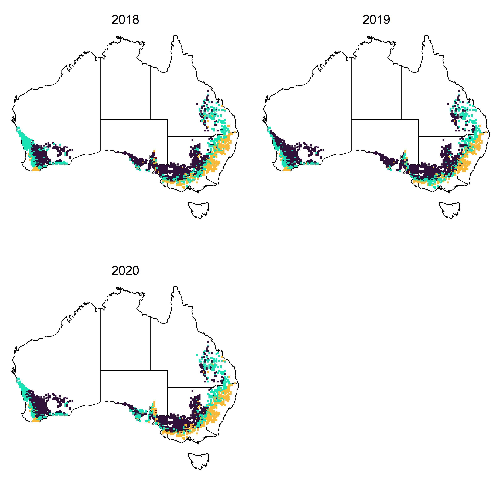

EC4MET workflow example
Nick Fradgley
EC4MET-workflow-example.RmdThis vignette runs through an example workflow to derive Environmental Covariates (ECs) from weather and soil data for a multi-environment trial analysis using the example datasets included in the EC4MET package.
Example work flow
Load package and example dataset of info for field trial environments:
data("CAIGE20_22envs")The example data set includes environment names, lat and lon values and sowing dates for 36 trial environments in Australia as part of the CAIGE project (Trethowan et al. 2024) as well as fitted environmental main effects and factor loadings fitted from a factor analytic mixed model multi-environment trial (MET) analysis as described by (Fradgley et al. 2025; Smith et al. 2021).
head(CAIGE20_22envs)Get ECs for observed environments
Get daily weather data from SILO (Jeffrey et al.
2001) for each observed environment in the MET with the
get.SILO.weather() function:
obs.wthr <- get.SILO.weather(
Envs = CAIGE20_22envs$Environment,
Lats = CAIGE20_22envs$Lat,
Lons = CAIGE20_22envs$Long,
Years = CAIGE20_22envs$Year,
verbose = T
)The get.BARRA.weather() function can similarly be used
to extract different weather data from the BARRA-R2
data resource (Su et al.
2022) and should output data in the same format.
You can see that the $data output from this contains a
data matrix for each of six weather variables with the 36 environments
as rows and 365 days of the year as columns:
sapply(obs.wthr$data, dim)A daily index of soil moisture can also be estimated be calculated based on the rainfall, temp, and day length and added to the weather data object:
obs.wthr <- add.SMI(obs.wthr)The weather data can then be used to define crop growth stage specific ECs for each environment.
obs.weather.ECs <- get.W.ECs(
weather = obs.wthr,
sow.dates = CAIGE20_22envs$Sowing.date,
verbose = T
)You can see that the output from this function includes
(ECs) a data frame of 104 ECs as columns for 36
environments as rows as well as a data frame (gs.dates) of
estimated dates of crop growth stages that the ECS were calculated
between:
As well as weather related ECs, soil attribute covariates can be
extracted using the get.S.ECs function from the SLGA
data resource (Grundy
et al. 2015).
obs.soil.ECs <- get.S.ECs(
Envs = CAIGE20_22envs$Environment,
Lats = CAIGE20_22envs$Lat,
Lons = CAIGE20_22envs$Long,
verbose = F
)The soil EC data matrix is also in the same format with 36 environments as rows and 96 soil ECS as columns:
dim(obs.soil.ECs)For more information on how ECs are calculated, see Fradgley et al. (2025) .
Get ECs for a wider set of unobserved environments
An example dataset of gridded environment locations that cover the extend of the Australian wheat belt is also included in the package. This dataset includes 5,091 unique environments between 2018 and 2020.
ECs for all of these untested environments can be extracted and calculated in a similar way as for the observed data.
wheat.area.wthr <- get.SILO.weather(
Envs = wheat.area.envs$Env,
Lats = wheat.area.envs$Lat,
Lons = wheat.area.envs$Lon,
Years = wheat.area.envs$Year,
verbose = T
)
wheat.area.wthr<-add.SMI(wheat.area.wthr)
wheat.area.wthr.ECs <- get.W.ECs(
weather = wheat.area.wthr,
sow.dates = wheat.area.envs$sow.dates,
verbose = T
)
wheat.area.soil.ECs <- get.S.ECs(
Envs = wheat.area.envs$Env,
Lats = wheat.area.envs$Lat,
Lons = wheat.area.envs$Lon,
verbose = T
)Combine weather and soil ECs for the observed and wheat belt environments:
Predict into unobserved environments
Predict environmental effects defibed in the observed environments
dataset for all wheat belt environments based on the ECs using the
pred.env.effs() function:
obs.env.effs <- CAIGE20_22envs[, c("Main_E_effect", "FA1", "FA2", "FA3")]
rownames(obs.env.effs) <- CAIGE20_22envs$Environment
wheat.area.preds <- pred.env.effs(
train.ECs = obsECs,
new.ECs = wheat.area.ECs,
E.effs = obs.env.effs
)Environment type iClasses that are defined from the combination of either positive or negative factor loadings for each environment can be calculated as described by Smith et al. (2021). These iClass environement types can then be plotted for all environments in the Australian grain belt on maps for each year:
iclasses <- apply(wheat.area.preds[, c("FA1", "FA2", "FA3")], 1, function(x) paste(ifelse(x > 0, "p", "n"), collapse = ""))
iclass.cols <- c("#30123BFF", "#1AE4B6FF", "#FABA39FF", "#7A0403FF")
names(iclass.cols) <- unique(iclasses)
par(mfrow = c(2, 2), mar = c(1, 1, 1, 1))
for (y in unique(wheat.area.envs$Year)) {
oz::oz()
points(wheat.area.envs$Lon[wheat.area.envs$Year == y],
wheat.area.envs$Lat[wheat.area.envs$Year == y],
pch = 15, cex = .5,
col = iclass.cols[iclasses[wheat.area.envs$Year == y]]
)
mtext(text = y, side = 3, line = -1.5, cex = 1.2)
}